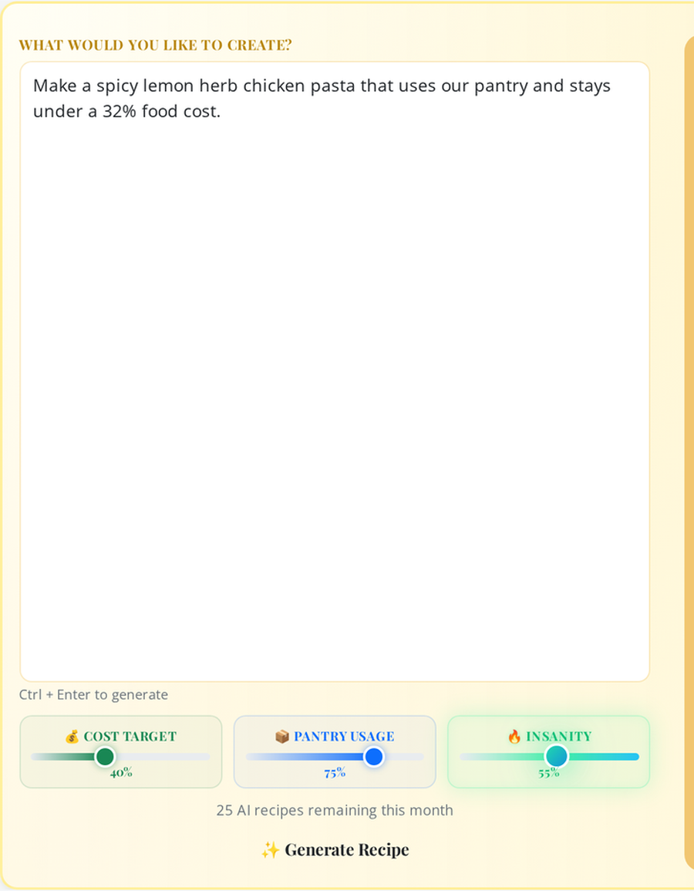
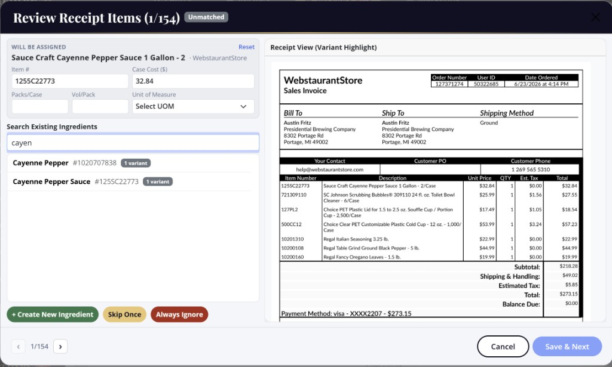
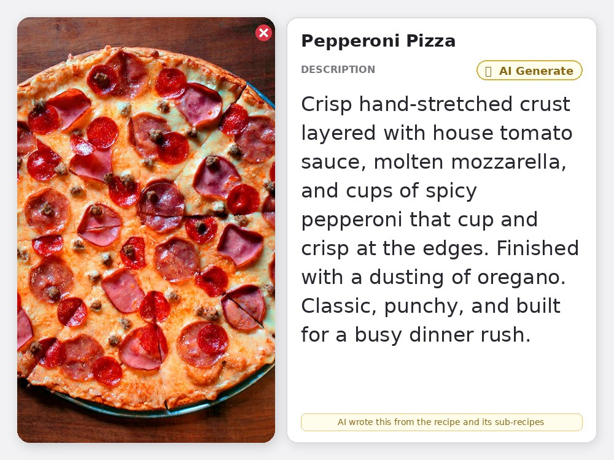
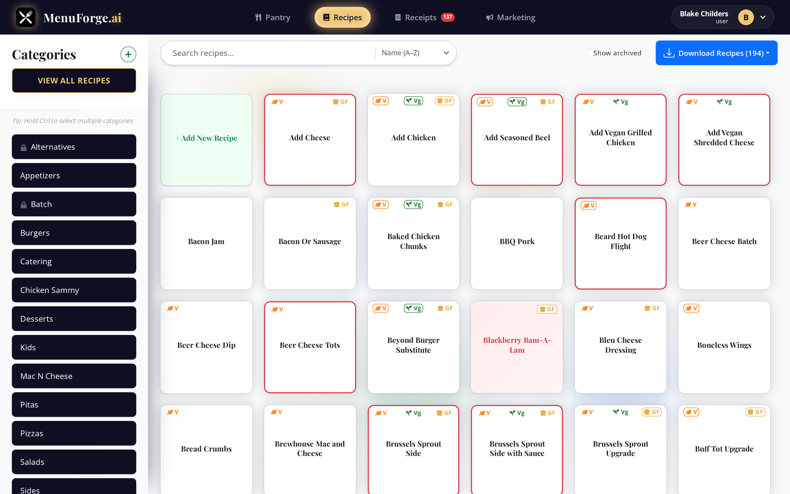
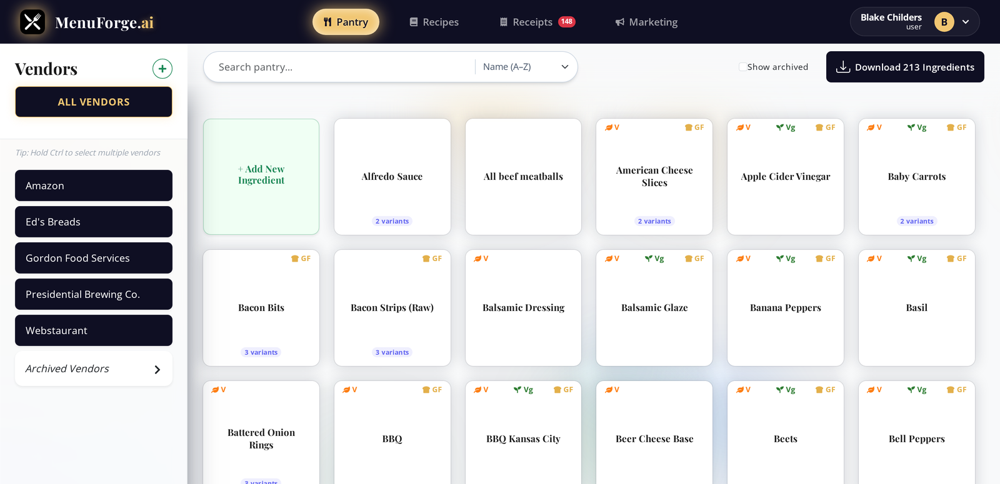
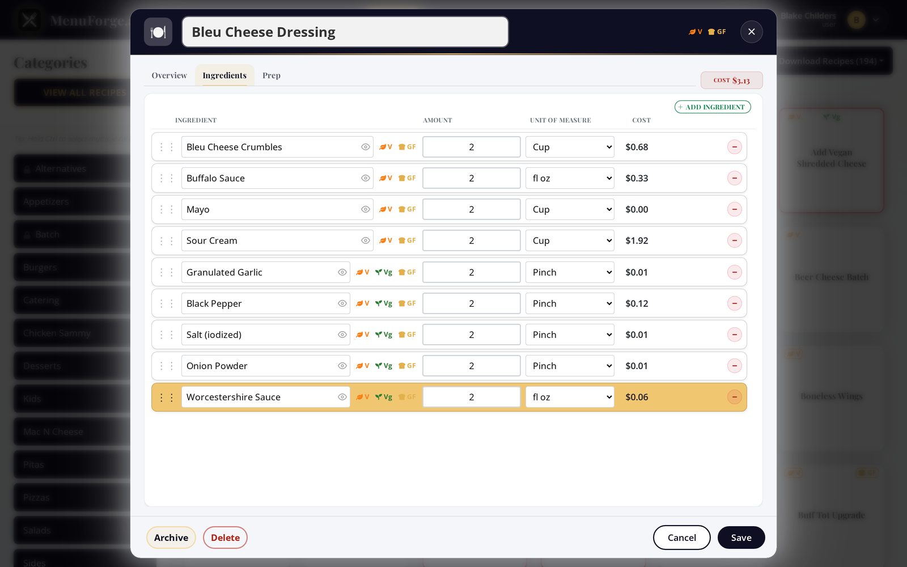
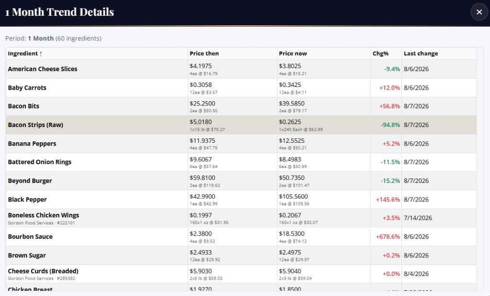
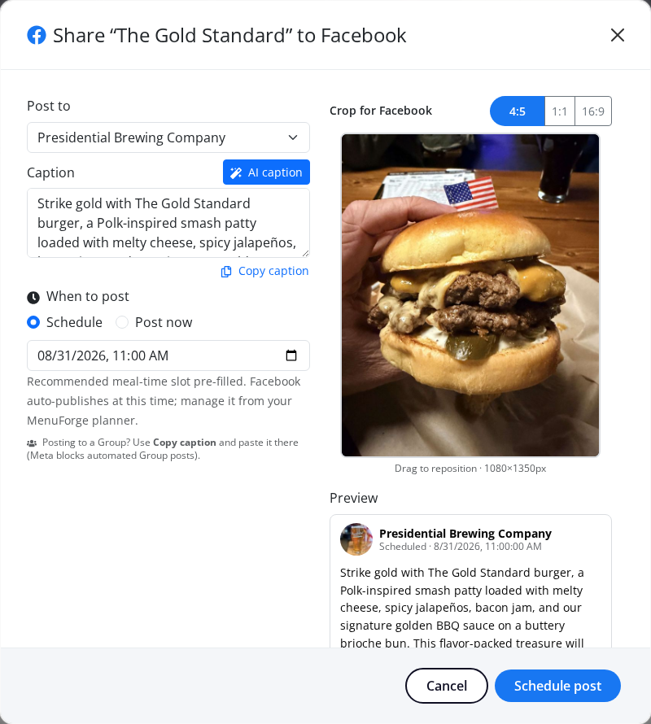

Recipe Management & Costing
Create, organize, and manage recipes with sub-recipes and preparation instructions. Recipe costing built in so you know your food costs before the ticket prints.
Transform your recipe creation and ingredients management with AI
Everything you need for professional recipe creation and ingredients management
Create, organize, and manage recipes with sub-recipes and preparation instructions. Recipe costing built in so you know your food costs before the ticket prints.
Track raw ingredients, pack sizes, vendors, and units. Manage your inventory and keep costs accurate across every recipe that uses them.
Instantly see if a recipe is vegetarian, vegan, or gluten free based on all included ingredients. Substitute flags show when alternatives are available.
Store step-by-step instructions for how to cook each recipe. Your team always has the same prep process in one place, shift after shift.
Organize recipes by category: Batch, Mains, Sides, and more. Filter and find what you need quickly when the ticket rail is already full.
Multi-user recipe management. Assign roles and collaborate on recipes with your team so prep stays consistent across shifts.
Email or upload invoices. Pack costs update; every recipe recosts. Alerts when a change crosses your threshold.
AI writes the dish copy from ingredients and sub-recipes, in your brand voice. Send it with photos already in the app.
Describe a dish, tune how it builds, and let AI handle recipes, receipts, marketing, and unit math.

The sliders tell AI how to behave before it writes a line. Drag them and the labels react the same way they do in the app, so you can feel the tradeoffs before you spend a generation.
Balanced plate cost. Enough room for quality without blowing the budget.
Lean on what you already stock. Fewer special orders, faster prep.
A little spark. Classic bones with one unexpected twist.

Email in a vendor invoice. AI reads the page, pulls every line item, and matches it to the right pantry ingredient. Confirm anything it could not place, and pack costs update across every recipe that uses them.

AI reads the recipe and its sub-recipes to write a branded description right on the Overview tab. Hit AI Generate and the dish writes itself in your voice, ready for the menu.
Costed against the case price, not a guess.
You buy by weight and cook by volume. Ask AI and it works out the conversion for that ingredient, so a recipe measured in cups still costs against the case price you paid.
Simple, powerful, and efficient recipe creation and management process
Manage your ingredients inventory with pack sizes, vendors, and units. Keep your ingredient list organized so recipes stay accurate.
Create recipes manually or use our AI recipe generation to instantly generate professional recipes. Add ingredients, prep steps, and cooking instructions.
Organize recipes by category and collaborate with your team. Multi-user access keeps everyone on the same page.
Real screenshots from the live app. No mockups.

Filter by category, search, and sort, with dietary flags right on the card. The colors do the triage for you: a pink card means the costing is broken, usually a missing price or a unit that will not convert. A red border means the prep instructions are missing, and gold means AI wrote it. You spot every problem without opening a single recipe. Keep the board clean for service, then drill into only the dishes that need a fix. The same grid is where you hand a new cook the full menu without walking them through a binder.

Pack sizes, units, and vendor variants for each ingredient live in one place. Filter by supplier to see exactly what you buy and what it costs, then keep those pack prices flowing into every recipe that uses them. When a vendor swaps a case size, you update it once and the rest of the menu stays honest. Nicknames, item numbers, and alternate packs stay attached to the same ingredient so a GFS case and a Sysco bag never fight over which cost is real. Build recipes from the pantry you already trust, and the plate cost inherits the truth without another spreadsheet pass.

Every ingredient costs itself out as you type. Cost, minimum sell price, and your menu price stay pinned to the header, so the plate cost is never a guess when you print the ticket. Nested batch recipes roll up too, so a sauce used in ten dishes still carries the right cost into each one. Change an amount or a unit and the totals move with you: no rebuild, no night audit. You see contribution margin while the recipe is still open, which means you catch a dish that will not pencil before it ever hits the board.
Email or upload a vendor invoice. Confirm the unmatched lines and live pack costs flow straight into your pantry, then every recipe that uses those ingredients recosts itself without a spreadsheet pass. Price-change alerts call out the spikes worth acting on, so you decide whether to raise a menu price, swap a vendor, or leave the build alone before the next order guide goes out.

Trends show what is happening to raw goods pricing so you can predict whether COGS are heading up or down before the P&L surprises you. Track pack cost over time per ingredient, with the percent change called out so a quiet creep does not sneak past. Over months of invoices you also see seasonality in produce, oils, and proteins that rise and fall on a calendar, so you can plan specials, lock in a case, or rewrite a build while the window is still open. When a price updates, every recipe using it recosts automatically. Use the history to brief owners, defend a menu change, or catch a vendor that keeps edging the case price without telling you.

AI writes the caption from the recipe and its sub-recipes in your brand voice. Crop the photo, pick a meal-time slot, and publish without bouncing between tools. Keep the dish photo and the copy tied to the same recipe card so marketing never ships last week's special by mistake.
Real operators on costing, prep, and getting the team off spreadsheets
I used to price all of my recipes in Microsoft Excel. Capturing the costs of all subrecipes accurately was a pain in the neck, and my team was not capable of using the tool for accurate recipe costing. MenuForge has changed everything. Now, even my least tech-savvy team members know exactly what to do. MenuForge is so intuitive that they could pick it up quickly and run with it. Goodbye spreadsheets!
Invoice hits the inbox, pack costs update, and every plate that uses that item recosts. We stopped playing catch-up on Friday nights.
Dietary flags finally match what we plate. Vegetarian and gluten-free callouts stopped being a verbal game of telephone.
Batch sauces used to hide bad math. Nested recipes roll up clean now, so the specials board is honest before we print it.
AI descriptions sound like us, not a brochure. We generate a menu blurb in the recipe and ship it the same afternoon.
Price history showed the oil creep we had been shrugging off. We renegotiated the case before the next quarter.
New hires open a recipe and see prep, cost, and allergens in one place. Training weeks got shorter overnight.
We buy by the case and cook by the cup. Unit conversions stopped being a napkin sketch between shifts.
Pink cards on the recipe grid tell us costing is broken before service. We fix the gap instead of discovering it on the P&L.
Multi-user access means the AM and PM teams edit the same truth. No more mystery versions of the chili recipe.
Social posts used to wait on a designer. Now the dish photo and caption leave from the same recipe card.
Vendor variants finally live under one pantry ingredient. GFS and Sysco packs stopped fighting over the real cost.
Minimum sell price in the header keeps us from underpricing a special when food costs jump midweek.
Seasonality in raw goods is obvious once you chart it. We plan produce-heavy specials when the trend dips.
Prep steps live with the recipe, not in a binder nobody updates. Consistency across shifts got boring in the best way.
We generate a draft recipe from a vibe, then tighten costs before it ever hits the menu. Idea to plate got faster.
Alerts when a pack price crosses our threshold. Quiet cost creep does not get to hide for three invoices anymore.
Start with our free plan and upgrade as you grow